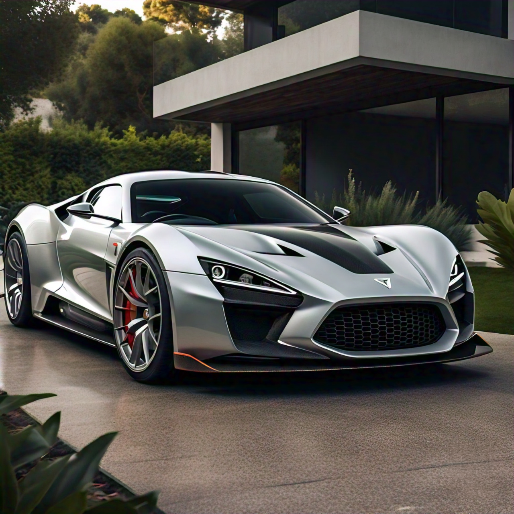
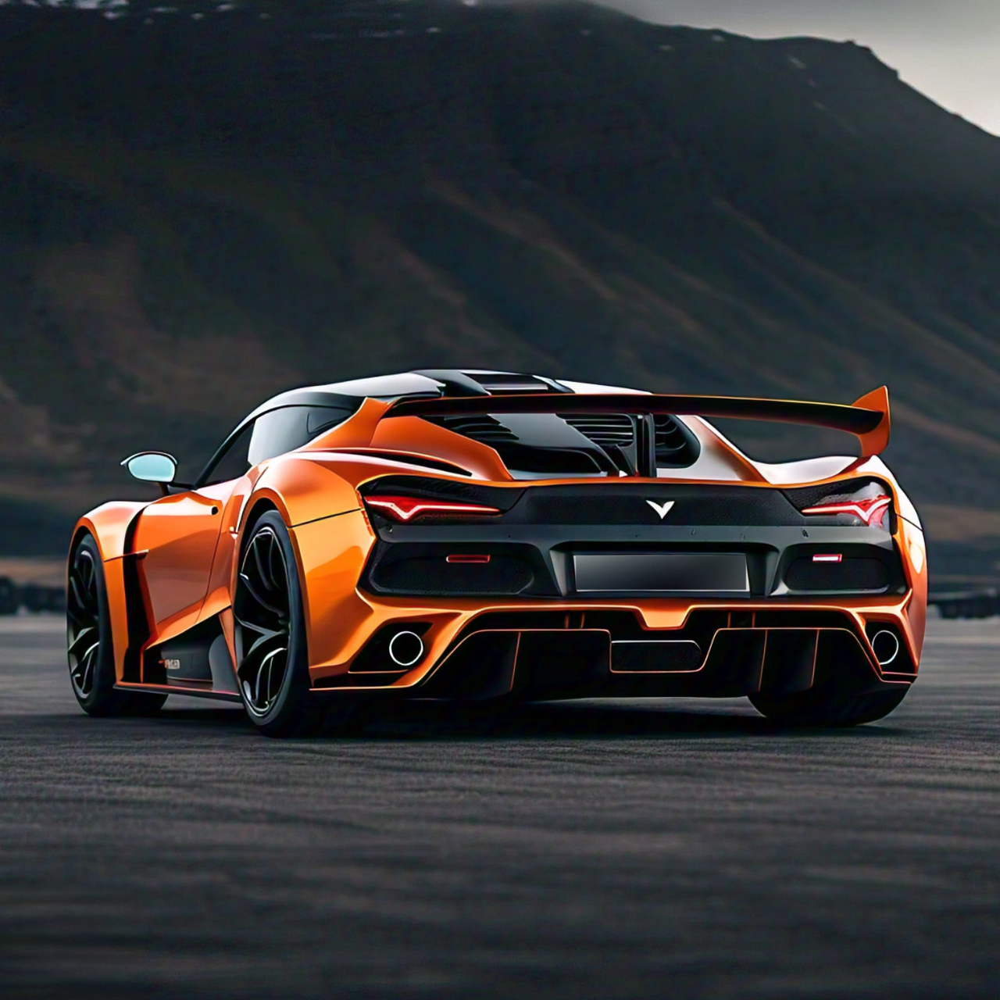

gtr-4
OVERVIEW:
The GTR-4 is the 4th generation of Epsilon's GT race cars. The successor to the 2nd and 3rd gen GT cars, which are now discontinued. The GTR-4 races in Gran Touring races around the world. The production GTR-4 cars have different interior components to the cars used in racing. The steering wheel and seats are more comfortable and accessible compared to conventional race cars. Built for track use, the GTR-4 excels in top speed over long straights. Achieved with the help of the ambitious quad turbo induction system.
SPECIFICATIONS:
| Horse power | 840 hp |
|---|---|
| Torque | 805 Nm |
| Engine | v12 - ESO12 |
| Induction | quad turbo |
| Weight | 1630kg |
| Top speed | 390 km/h |
| Red Line | 9500+ RPM |
| efficiency | 14.5L/100km |
COLOURS:
Purchase - $540,240